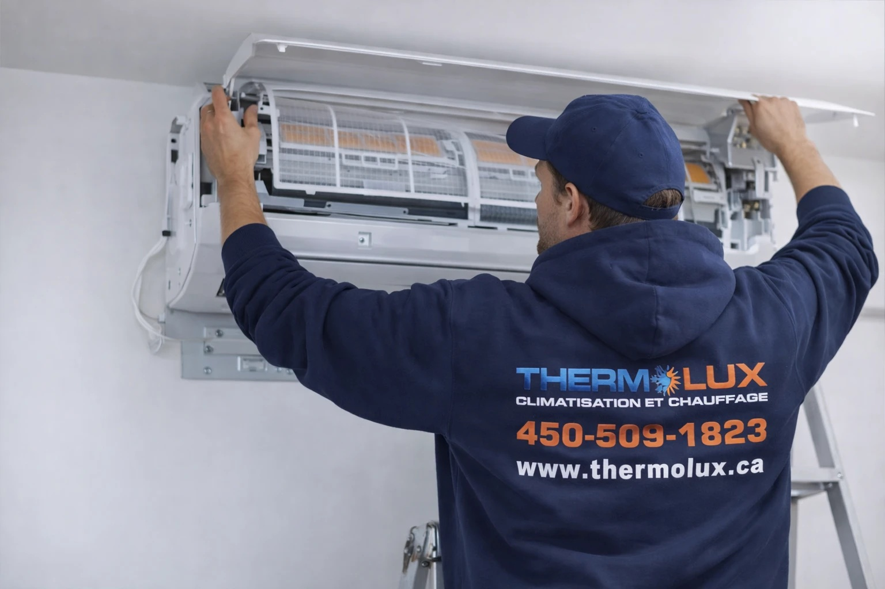

Du mazout à la thermopompe
Le programme fédéral aide les propriétaires qui chauffent au mazout à passer à une thermopompe électrique : jusqu’à 10 000 $, payés à l’avance.
Demandes closes
Le 31 juillet 2026 était le dernier jour pour déposer une demande. Les demandes reçues avant cette date continuent d’être traitées.
Qui était admissible ?
- Propriétaire canadien qui chauffe sa maison au mazout.
- Revenu du ménage égal ou inférieur au revenu médian après impôt.
- Réseau électrique intégré : les régions éloignées (dont certaines du Québec) et le Nunavut ne sont pas admissibles.
- Pas de remboursement après coup : l’aide est versée avant les travaux dans la plupart des cas.
Jusqu’à 10 000 $ pour
L’achat et l’installation d’une thermopompe admissible, et au besoin :
- les mises à niveau électriques et mécaniques nécessaires;
- le retrait sécuritaire du réservoir à mazout (le retrait n’est pas exigé par le programme, mais il est une dépense admissible);
- un chauffage électrique d’appoint;
- la conversion d’autres systèmes au mazout, comme un chauffe-eau;
- les boucles extérieures d’une thermopompe géothermique.
Source officielle
Chiffres vérifiés sur le site officiel en novembre 2026. Les règles changent : confirmez-les auprès du programme avant de commencer vos travaux.
Les autres subventions
Cinq programmes, cinq pages : choisissez celui qui vous concerne.
Un travail propre, une équipe courtoise

Licence RBQ 5812-9388-01Entrepreneur certifié par la Régie du bâtiment du Québec
Techniciens certifiés
Installation et entretien par des professionnels licenciés.
Garantie fabricant et main-d’œuvre
Votre installation est protégée.
Service fiable et professionnel
Une équipe locale, de la soumission à l’entretien.
Aide pour la subvention LogisVert
Nous vous accompagnons dans les démarches.